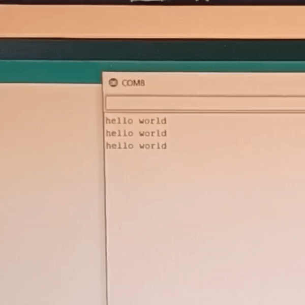
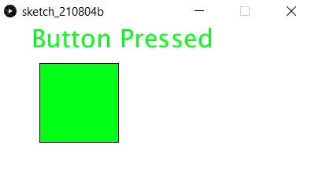
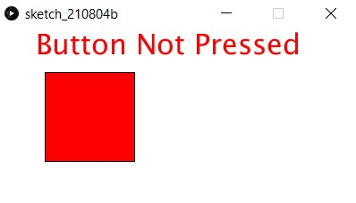

Interface applications programming
As my FTDI adapter stopped working, I was advised to use an arduino uno to interface with my PC. After some trial and error, I ended up with this setup, which uses the isp programmer as a power source.
I also needed to unplug the uno while programming the board to prevent upload errors.

This was the code I ended up with. I found out that the tx rx lights on the uno can be used as handy indicators to show if my hello board was talking to the com port.
#include
char i="0";
SoftwareSerial mySerial(1,2); //rx, tx
void setup()
{
pinMode(3,INPUT_PULLUP);
pinMode(4,OUTPUT);
mySerial.begin(9600);
}
void loop()
{
mySerial.println("hello world");
delay(1000);
}
Testing some example code to make sure that serial works.

I then modified this code to respond to the normally high pin 4, making it send a 1 only when the button is pressed.
#include SoftwareSerial.h
char i="0";
SoftwareSerial mySerial(1,2); //rx, tx
void setup()
{
pinMode(3,INPUT_PULLUP);
pinMode(4,OUTPUT);
mySerial.begin(9600);
}
void loop()
{
if(digitalRead(3)==0)
{
mySerial.write('0');
}
else
{
mySerial.write('1');
}
delay(100);
}
Now it was time to try out processing. With the help of online tutorials, i first drew a rectangular window (400x200). Then, I select the correct com port after looking at the arduino ide. It is worth noting that the Serial.list()[] command takes the nth number com port visible. Meaning that if there were 3 com ports visible, Serial.list()[0] will select the lowest number com port.
I actually had to edit the arduino code to use serial.write instead of serial.print to avoid formatting errors.
After this, a I added a text box with variable content "textmsg". This would allow for changing the text according to if statements.
Remembering that i can colour the box, i went onto a hex colour picker to look for a green and red colour, settling for 0, 255, 21 (green) and 255, 0, 0 (red).
// Read data from the serial port and change the color of a rectangle
// when a switch connected to the board is pressed and released
import processing.serial.*;
Serial port;
int val;
String textMsg="";
void setup() {
size(400, 200);
frameRate(10);
String portName = Serial.list()[2]; //third port on my pc is the arduino
port = new Serial(this, portName, 9600);
}
void draw() {
if (0 < port.available()) { // If data is available,
val = port.read(); // read it and store it in val
}
background(255); // Set background to white
textSize(32);
text(textMsg,40,30);
if (val == '0')
{ // If the serial value is 0,
fill(0, 255, 21);
textMsg="Button Pressed";
}
else
{ // If the serial value is not 0,
fill(255, 0, 0);
textMsg="Button Not Pressed";
}
rect(50, 50, 100, 100);
}

These are the graphics for indicating button status.  